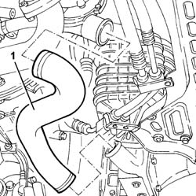
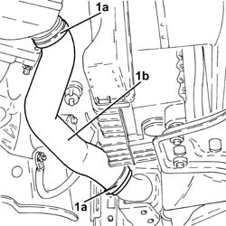

1048b14 air delivery pipe between turbo charger and heat exchanger - replace
- Path
- Procedures > 10 ENGINE > 1048 ENGINE AIR SUPPLY CIRCUIT > 1048B pressure air circuit > 1048b14 air delivery pipe between turbo charger and heat exchanger - replace
- Kind
- repair procedure (removal / refitting; the operation number is the code)
- Applies to
- engines: 1.9 JTD 8V, 1.9 JTD 16V; all production periods
- Interactive page
- https://sloeber94.github.io/elrnDB-a147/en/#/3025022
Applies to: engines: 1.9 JTD 8V; all production periods
 Removing
Removing
 Refitting
RefittingPlace the car on a ramp.
7055B54 under-engine guard - r r
1. Remove the air supply hose between the turbocharger and the heat exchanger.

Applies to: engines: 1.9 JTD 8V; all production periods
Refitting
RemovingFit the air supply hose between the turbocharger and the heat exchanger.
7055B54 under-engine guard - r r
Remove the vehicle from the ramp.
Applies to: engines: 1.9 JTD 16V; all production periods
Removing
RefittingPosition the vehicle on the ramp.
Proceed with removal 7055B54 under-engine guard - r r .
1. Loosen the bands (1a) and remove the air supply hose between the turbocharger and the heat exchanger (1b).

Applies to: engines: 1.9 JTD 16V; all production periods
Refitting
RemovingRefit in its seating the air supply duct between turbocharger and heat exchanger and tighten the bands.
Proceed with refitting 7055B54 under-engine guard - r r .
Remove the car from the ramps.